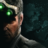

 Tom Clancys Splinter Cell Blacklist
Detalles
 |
|
| Tiempo de juego | No Jugado |
| Última actividad | Nunca |
| Añadido | 11/6/2024 14:41:31 |
| Modificado | 2/3/2025 19:31:59 |
| Estado de finalización | No Jugado |
| Librería | Playnite |
| Fuente | 1 TB EXT |
| Plataforma | PC (Windows) |
| Fecha de lanzamiento | 8/20/2013 |
| Puntuación de la Comunidad | 79 |
| Puntuación de la Crítica | |
| Puntuación de usuario | |
| Género | Acción Aventura |
| Desarrollador | Ubisoft Toronto |
| Editor | Ubisoft |
| Característica | Cooperativo Multijugador Un Jugador |
| Enlaces | Punto de encuentro Discusiones Guías Noticias Página de la tienda PCGamingWiki |
| Tag | Acción Ambientales Aventura Buena trama Cooperativos Cooperativos en línea Disparos Disparos en tercera persona Estrategia FPS Multijugador Para adultos Para mando Parkour Primera persona Rol Sigilo Tácticos Tercera persona Un jugador |
Descripción
Estados Unidos tiene presencia militar en dos tercios de los países de todo el mundo, y algunos de ellos han dicho ‘basta’. Un grupo terrorista autodenominado los Ingenieros ha lanzado un ultimátum al que llaman la Lista Negra, una serie de ataques en escala contra intereses de EE.UU. El agente especial Sam Fisher es el líder del recién formado 4th Echelon, una unidad clandestina que solo responde ante el presidente de Estados Unidos, y cuya misión será dar caza a los Ingenieros por todos los medios, y detener la cuenta atrás de la Lista Negra antes de que llegue a cero.
Sam ha vuelto con su habitual traje operativo y sus visores, y es más letal y ágil que nunca. Con la libertad de hacer lo que sea necesario para detener la Lista Negra, Sam viaja desde lugares exóticos a ciudades estadounidenses en una carrera contrarreloj para averiguar quién está detrás de esta terrible amenaza. La emoción del juego se ve potenciada por la captura completa de movimientos, que crea una experiencia totalmente de cine.
Tu propio estilo de juego:
Splinter Cell Blacklist mantiene las raíces de juego de sigilo propias de la franquicia mientras explora nuevas direcciones para entrar de lleno en la acción y la aventura. Los jugadores pueden definir su propio estilo de juego y ver recompensadas sus decisiones.
Herramientas:
Acaba con los Ingenieros utilizando nuevos dispositivos, como la cámara espía mejorada o el ANT trirrotor. O bien usa los dispositivos clásicos como la pistola eléctrica o el cuchillo, en este caso el brutal y curvado Karambit.
A los entusiastas del sigilo les encantarán las nuevas habilidades de Sam para secuestrar y arrastrar enemigos, además de la capacidad de matar en movimiento, que permite al jugador atacar con precisión quirúrgica… sin olvidar el marcar y ejecutar múltiples enemigos en un solo movimiento fluido.
Crear un nuevo Echelon:
Sam está creando una nueva unidad Echelon, con su equipo, y con sus reglas. Anna Grimsdottir, Grim, es su directora técnica de operaciones; el agente de la CIA Isaac Briggs le da potencia de fuego adicional, y el hacker Charlie Cole completa el equipo. Fourth Echelon es un grupo de operaciones totalmente móvil, con recursos casi ilimitados y la tecnología más avanzada, que utiliza como base un avión espía reconvertido y adaptado, el Paladín.
Disfruta de una experiencia completa integrada
Sam y su equipo reciben en tiempo real toda la información sobre los atentados terroristas gracias a la IME, Interfaz de Misión Estratégica.
La IME procesa y gestiona los datos de todos los objetivos de misión mientras el Paladín se desplaza hacia el terreno de operaciones. Además, sirve de nodo central de contenido para el juego, incluso en los modos cooperativo y de enfrentamiento. A través de la IME, los jugadores pueden aprovechar el sistema económico global del juego, que les permite personalizar completamente el equipamiento de Sam, desde su traje y visores hasta las armas que tiene a su disposición, así como mejorar el propio Paladín y acceder a nuevos elementos, entre otras cosas.
Regresa Espías vs mercenarios:
El modo Espías vs mercenarios vuelve con un nuevo juego asimétrico. Los jugadores pueden enfrentarse en equipos de 4 y usar los elementos de personalización para crear su propio espía o su mercenario favorito, en función de su estilo de juego. Y además, también regresa Espías vs mercenarios Clásico, para los fans del modo original.
Cooperativo
Con la IME, las líneas entre la campaña individual y el juego cooperativo empiezan a difuminarse, ya que el argumento narrativo se profundiza con la historia de Sam y Briggs. Consigue dinero del juego y desbloquea armas y dispositivos adicionales en misiones especializadas que te asignan Grim, Briggs, Charlie y Kobin.
Características principales
Opera sin restricciones:Sam ha vuelto con su habitual traje operativo y sus visores, y es más letal y ágil que nunca. Con la libertad de hacer lo que sea necesario para detener la Lista Negra, Sam viaja desde lugares exóticos a ciudades estadounidenses en una carrera contrarreloj para averiguar quién está detrás de esta terrible amenaza. La emoción del juego se ve potenciada por la captura completa de movimientos, que crea una experiencia totalmente de cine.
Tu propio estilo de juego:
Splinter Cell Blacklist mantiene las raíces de juego de sigilo propias de la franquicia mientras explora nuevas direcciones para entrar de lleno en la acción y la aventura. Los jugadores pueden definir su propio estilo de juego y ver recompensadas sus decisiones.
- Los jugadores de tipo Fantasma no quieren ser detectados. Analizan y planean la mejor forma de actuar sin que nadie lo sepa. Son los mejores espías.
- Los jugadores de tipo Asalto confían en su instinto y en el ataque frontal para superar cualquier situación. Lo suyo es el enfrentamiento abierto.
- Los jugares de tipo Pantera buscan la mejor forma de ser letales, eficientes y sigilosos. Les gusta el ataque sigiloso y preciso.
Herramientas:
Acaba con los Ingenieros utilizando nuevos dispositivos, como la cámara espía mejorada o el ANT trirrotor. O bien usa los dispositivos clásicos como la pistola eléctrica o el cuchillo, en este caso el brutal y curvado Karambit.
A los entusiastas del sigilo les encantarán las nuevas habilidades de Sam para secuestrar y arrastrar enemigos, además de la capacidad de matar en movimiento, que permite al jugador atacar con precisión quirúrgica… sin olvidar el marcar y ejecutar múltiples enemigos en un solo movimiento fluido.
Crear un nuevo Echelon:
Sam está creando una nueva unidad Echelon, con su equipo, y con sus reglas. Anna Grimsdottir, Grim, es su directora técnica de operaciones; el agente de la CIA Isaac Briggs le da potencia de fuego adicional, y el hacker Charlie Cole completa el equipo. Fourth Echelon es un grupo de operaciones totalmente móvil, con recursos casi ilimitados y la tecnología más avanzada, que utiliza como base un avión espía reconvertido y adaptado, el Paladín.
Disfruta de una experiencia completa integrada
Sam y su equipo reciben en tiempo real toda la información sobre los atentados terroristas gracias a la IME, Interfaz de Misión Estratégica.
La IME procesa y gestiona los datos de todos los objetivos de misión mientras el Paladín se desplaza hacia el terreno de operaciones. Además, sirve de nodo central de contenido para el juego, incluso en los modos cooperativo y de enfrentamiento. A través de la IME, los jugadores pueden aprovechar el sistema económico global del juego, que les permite personalizar completamente el equipamiento de Sam, desde su traje y visores hasta las armas que tiene a su disposición, así como mejorar el propio Paladín y acceder a nuevos elementos, entre otras cosas.
Regresa Espías vs mercenarios:
El modo Espías vs mercenarios vuelve con un nuevo juego asimétrico. Los jugadores pueden enfrentarse en equipos de 4 y usar los elementos de personalización para crear su propio espía o su mercenario favorito, en función de su estilo de juego. Y además, también regresa Espías vs mercenarios Clásico, para los fans del modo original.
Cooperativo
Con la IME, las líneas entre la campaña individual y el juego cooperativo empiezan a difuminarse, ya que el argumento narrativo se profundiza con la historia de Sam y Briggs. Consigue dinero del juego y desbloquea armas y dispositivos adicionales en misiones especializadas que te asignan Grim, Briggs, Charlie y Kobin.